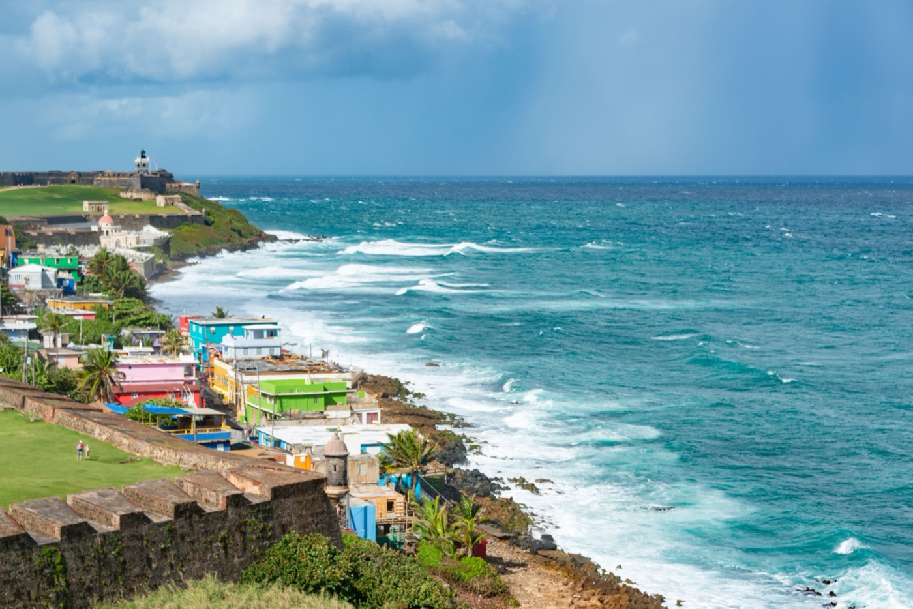

Moving to Puerto Rico in 2026
A US territory you can move to with a one-way ticket — plus the island's famous Act 60 tax breaks, which changed in 2026. Here's the real cost of living, where expats land, and what the paperwork actually requires.

Puerto Rico is the rarest thing in the Caribbean for an American: a move with no immigration process at all. It's a US territory, so a US citizen can buy a one-way flight, land in San Juan, and start living there the same way they'd move from California to Texas — no visa, no work permit, no customs line. That accessibility, combined with the island's Act 60 tax incentives, has pulled a wave of mainland Americans to the island. But 2026 brought real changes to both the tax rules and the calculus of living here, and the honest picture is more nuanced than the “zero-tax paradise” headline suggests.
The residency question: there barely is one
For US citizens, US permanent residents, and US nationals, there is no visa and no residency application to move to Puerto Rico — because none is required. You move the way you move between states. Your citizenship doesn't change, your passport doesn't change, and you don't clear immigration on arrival.
The nuance is tax residency, which is different from simply living there. To unlock the island's tax advantages you must become a bona fide resident under IRS rules — broadly, spending at least 183 days a year in Puerto Rico, having your primary home and closer connections there, and not maintaining a tax home elsewhere. Living in Puerto Rico is trivially easy for an American; qualifying for its tax benefits is a genuine relocation with real tests.
Act 60: the tax draw, and what changed in 2026
Puerto Rico's tax incentives are why most high earners look at the island in the first place. The old shorthand of “Act 20 and Act 22” is out of date — both were folded into a single statute, Act 60 (the Puerto Rico Incentives Code), back in 2020. Two components matter for people relocating from the mainland:
- Export services (formerly Act 20): a qualifying business exporting services from Puerto Rico can pay a 4% corporate income tax rate on that income.
- Individual investors (formerly Act 22): a bona fide resident holding a valid decree has historically paid 0% Puerto Rico tax on interest, dividends, and capital gains earned after the move.
Underpinning both is IRC §933: bona fide Puerto Rico residents are exempt from US federal income tax on Puerto Rico-source income — while remaining US citizens. That combination made the island a magnet for crypto investors, fund managers, and online-business owners since 2012.
Three 2026 changes you must know
- Hard deadline for 0%: the individual-investor program was extended out to 2055, but applications filed on or before December 31, 2026 keep the 0% rate on qualifying passive income.
- New 4% rate for later applicants: as of January 1, 2026, new individual-investor applicants pay a 4% flat tax on Puerto Rico-sourced dividends, interest, and capital gains instead of 0%. Existing decree holders are grandfathered at 0%.
- Home-ownership requirement: to keep the benefits, residents must now buy and own a primary residence within two years of receiving their decree — indefinite leasing no longer works.
These rules are strict and the residency tests are real. Talk to a Puerto Rico tax professional before making any move driven by Act 60.
Cost of living: lower than a US metro, but not “cheap Caribbean”
Puerto Rico is meaningfully more affordable than major mainland US cities — especially real estate, where San Juan prices are a fraction of New York, LA, or Miami. But it is not a budget Caribbean destination on the level of the Dominican Republic. Costs swing hard by location.
| Item (San Juan metro, 2026) | Typical figure | Note |
|---|---|---|
| Studio / 1-bed rent, central | ~$1,300/mo (median) | Higher in Condado, Dorado, Rincón |
| Median home purchase | ~$290,000–$308,000 | A fraction of comparable US-metro prices |
| Comfortable single budget | $2,000/mo can feel tight | In San Juan, Rincón, or Dorado once utilities/groceries are in |
In smaller towns and quieter coastal areas many expats live comfortably for less; in metro San Juan, tourist hubs, or upscale Dorado, budgets stretch. Utilities deserve special attention: the island's power grid is unreliable, and a backup generator plus, in some areas, a water cistern are considered essential rather than optional.
Where expats actually live

San Juan metro — Condado, Miramar, Ocean Park, Old San Juan, Isla Verde
The city-meets-beach option, popular with remote workers and families. Old San Juan is historic and walkable; Condado and Ocean Park are waterfront and amenity-rich. Best for people who want services, nightlife, and the shortest learning curve.
Dorado — upscale suburb, ~25 miles west
Gated communities, resorts, golf, and some of the best private healthcare on the island. The most expensive end of the market, favored by Act 60 professionals and retirees who want comfort and will pay for it.
Rincón — west-coast surf town
A laid-back surf town of roughly 13,000–15,000 that has become a “little slice of America,” with a strong community of surfers, artists, retirees, and remote workers. Lower cost and slower pace than the metro, at the expense of big-city services. Other options: Aguadilla (affordable, family-friendly), Ponce (traditional, cultural), Palmas del Mar in Humacao (gated resort community with bilingual schools), and Vieques/Culebra for small-island solitude.
Safety, healthcare & connectivity
Safety. As a US territory, Puerto Rico gets no formal State Department travel advisory (third-party trackers treat it as Level 1 — normal precautions). Crime is higher than the US average in some areas, and parts of San Juan (and La Perla) warrant caution — but the developed residential and expat areas (Condado, Isla Verde, Ocean Park, Dorado, Guaynabo, Palmas del Mar) feel considerably safer, with more private security and community networks. Neighborhood selection matters more here than in many destinations.
Healthcare. Private clinics and hospitals — concentrated in San Juan, Ponce, and the west coast — offer modern, bilingual, often US-trained doctors at prices below the mainland, and US medical licenses are recognized. One critical caveat: even though Puerto Rico is a US territory, not all stateside insurance plans cover routine care there — call your insurer before moving, and confirm availability of any regular prescriptions.
Internet & remote work. High-speed internet is solid in San Juan and the main cities but can be patchy in rural areas, and fiber is limited — check connectivity for your specific address before committing. Fully-remote workers can range further afield (Rincón, Aguadilla, Ponce, even Vieques); those who need frequent San Juan access cluster in Condado, Ocean Park, Miramar, Isla Verde, Guaynabo, or Dorado.
Resilience is the 2026 watchword
Hurricane Maria (2017) and Fiona (2022) exposed how fragile the grid is. When scouting a home, check for an independent water cistern and a backup generator — in 2026, “resilient living” has become the standard, and a beautiful beachfront loses its charm fast without reliable power and water.
Is Puerto Rico right for you?
- Great fit if: you're a US citizen who wants a no-paperwork move, English gets you by, you value proximity to the mainland, and — for high earners — the Act 60 math works even under the 2026 rules.
- Think twice if: you want rock-bottom Caribbean costs (the DR is cheaper), you can't tolerate grid/hurricane disruption, or your income wouldn't meaningfully benefit from the tax regime (in which case the residency tests and home-purchase requirement are cost without upside).
Relocating is step one. Owning the home is step two.
SORA designs and builds homes across the tropics — with our deepest roots in Panama and Costa Rica, where residency is straightforward and building costs a fraction of the coastal Caribbean. If your move is really about a place of your own in the sun, it is worth seeing what a fixed-price build looks like before you commit to any one island.
Frequently asked questions
Can Americans move to Puerto Rico without a visa?
Yes. Puerto Rico is a US territory, so US citizens, US permanent residents, and US nationals can move there with no visa, no work permit, and no immigration process — the same as moving between US states. Your citizenship and passport are unaffected.
What is Act 60 and how did it change in 2026?
Act 60 is Puerto Rico's consolidated incentives code (it absorbed the former Act 20 and Act 22 in 2020). It offers a 4% corporate rate for export-services businesses and, for individual investors who become bona fide residents, historically 0% tax on interest, dividends, and capital gains. In 2026 three things changed: applications must be filed by December 31, 2026 to keep the 0% individual-investor rate; new applicants from January 1, 2026 pay 4% instead of 0%; and residents must buy a primary home within two years of their decree.
How much does it cost to live in Puerto Rico in 2026?
It's cheaper than major US cities but not a budget Caribbean island. In central San Juan a studio or one-bedroom rents for around $1,300/month (median) and median home prices run roughly $290,000–$308,000. A $2,000/month single budget can feel tight in San Juan, Rincón, or Dorado once utilities and groceries are included; smaller towns are more affordable.
Is Puerto Rico safe for expats?
Crime is above the US average in some areas, and parts of San Juan warrant caution, but the main residential and expat neighborhoods — Condado, Isla Verde, Ocean Park, Dorado, Guaynabo, and Palmas del Mar — feel considerably safer and have stronger community and private-security networks. Neighborhood choice is the key variable.
Do I still pay US federal taxes if I move to Puerto Rico?
Bona fide residents of Puerto Rico are exempt from US federal income tax on Puerto Rico-source income under IRC §933, while remaining US citizens. Income from mainland or foreign sources can still be federally taxable, and qualifying as a bona fide resident requires meeting strict IRS tests (roughly 183+ days a year on the island plus a genuine closer connection). Professional tax advice is strongly recommended.
Sources & verification
Figures in this guide were checked against primary and authoritative sources on 27 July 2026. Immigration, tax, and cost figures change — always confirm the current rules with the official body or a licensed professional before acting.
- Puerto Rico DDEC — Incentives (Act 60) — official administrator of Act 60 tax decrees
- IRS — Bona fide residents of Puerto Rico — federal rules under IRC §933 / §937 residency tests
- US State Department — Puerto Rico — no formal advisory for the US territory (trackers treat as Level 1)